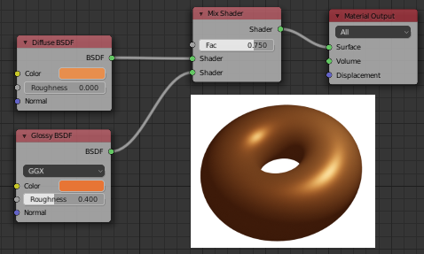
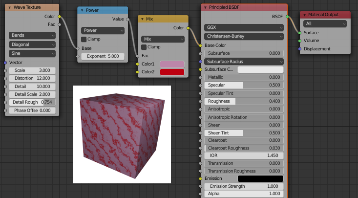

CS 424: Computer Graphics, Fall 2021
Blender Lab 4: Introduction to The Shader Editor
For this final Blender lab, you will work mostly with the Shader Editor, which is covered in Subsection B.4.3. The Shader Editor, sometimes called the Node Editor, is a GUI that lets you create a material by linking together nodes that represents part of the computation of the material's color. But the lab starts with a very short exercise about HDR lighting, from Subsection B.4.1. It would be useful to read Section B.4, but the information that you need for the lab is repeated here.
You will not turn in any work for this lab. You will get 5 points of lab credit for being at the lab and showing me that you have done some work.
HDR Lighting
In Blender, the background of a scene is set in the "World Properties" tab of the Properties Editor. The background actually provides illumination to the scene, something like ambient light but more realistic. The background can be an image, and can even provide all of the lighting for a scene. When an image is used as the background, it is something like a cube map, except it is applied to an infinitely large sphere instead of to a cube. For the lighting calculations to work well, the image should be large (4096 or 8012 pixels wide, for example). And since the color components are used in computations, it's good to have more than 8-bit color. That calls for an HDR (High Dynamic Range) image, which might, for example, use 16 bits per color component.
As a quick exercise, you should use an HDR image for the background of the scene that you will create. You can use green_point_park_4k.hdr from /classes/cs424. It's a 25 megabyte file. You can use it directly from that folder; you don't need to download or copy it. (Or you can download a different one from polyhaven.com. Get a "4K" version, which is 4096 pixels wide.)
To use the HDR image, start up Blender and go to the World Properties. In the "Surface" section of the properties, click the yellow dot next to "Color" and select "Environment Texture" from the popup. Click the "Open Button" that appears when you do this, and select the HDR image that you want to use.
You might want to delete the point light that is part of the Blender default scene, and maybe the cube as well.
The background of the scene will appear in the rendered image. It will appear in the 3D Viewport if you set the view style to "Rendered". But in any case, it will add lighting to your scene. If you set the renderer to be "Cycles" rather than "Eevee", the light from the background will even cast shadows. Here's an example:
Note that the background is effectively at infinite distance. this means that you can't place an object on the "ground" since the ground is just as far away as the sky. And you won't see the shadow of an object on the ground. In the sample image, I added a plane beneath the sphere to catch the sphere's shadow. Another peculiarity is that if you switch the scene to an orthographic projection, than all the pixels where the background will get their color from the same point in the background image, since the only thing that matters for sampling from the background is the view direction, and for an orthographic projection the view direction is constant.
The Shader Editor
The "Shading" screen is designed for working with the Shader Editor. To get to it, click the "Shading" button at the very top of the window. The shader editor itself is in the middle of the bottom of the Shading screen. Above it is a 3D View showing the scene. You can add, transform, and select objects in the 3D View as usual.
Select an object in the 3D View. If it has a material already, you should see it in the Shader Editor. If it does not have a material, there should be a "New" button at the top of the Shader Editor that you can click to add a new material. (If you don't see this, check the popup near the top left corner of the Shader Editor, which needs to be set to "Object" and not to "World" or "Line Style".)
The original material will be shown as a "Principled BSDF" node connected to a "Material Output" node. Any material needs a "Material Output" node, which outputs the final color for the material. But for the first exercise, you should delete the "Principled BSDF" node. (Just click on it to select it, and hit the Delete key or Control-X.)
To make a material that uses only basic diffuse reflection, you can add a "Diffuse BSDF" node and connect its green output nib to the green "Surface" input nib on the "Material Output" node":
To add a node to the editor, use the "Add" menu frpm the top of the editor, or hit SHIFT-A to call up the menu. You can find "Diffuse BSDF" in the "Shader" submenu of the "Add" menu.
But you can get a more complex material by "mixing" the outputs from two shader nodes together using a "Mix Shader" node, which takes the outputs from two shader nodes and combines them in a proportion given by the "Fac" property of the Mix Shader. For example, you can mix a diffuse node with glossy node to get specular highlights:

(This picture and the next two are from Subsection B.4.3.)
Note, by the way, that you can remove a connection between nodes by clicking on the nibs at either end of the connection and dragging away from the nib.
You should show me that you have made a material by mixing diffuse and glossy shaders, similarly to the above image.
Textures
Of course, you can use the "Principled BSDF" shader in the Shader Editor, and you can use nodes to compute any of the inputs to the principled shader. Here is a setup for computing the color input of the principled shader as a procedural texture:

The "Mix" node in this picture is a "MixRGB" node, which you can find in the "Color" submenu of the "Add" menu. It mixes colors rather than shader outputs. Here, the two colors are constant (though, of course, they could get their values as inputs from other nodes).
The "Power" node is actually a "Math" node, from the "Converter" submenu of the "Add" menu, with its function popup set to "Power". A "Math" node computes a mathematical function of its two inputs. Its purpose here is to make the bands of darker color narrower.
The "Wave Texture" node is from the "Texture" submenu of the "Add" menu. That menu also contains the "Image Texture" node, which can be used to apply an image texture:

If the object that is being textured has appropriate UV texture coordinates, then you only need to use the Image Texture node. If not, you can use Generated texture coordinates, but to do that, you need to connect a "Texture Coordinate" node (from the "Input" submenu) to the "Vector" input of the Image Texture node, as shown in the picture.
You should show me that you have used a texture as part of a material in the node editor. In any remaining time, you should continue working with the node editor, or try to compose the objects that you have worked on into a nice scene. You might try something like the last example in Section B.4.